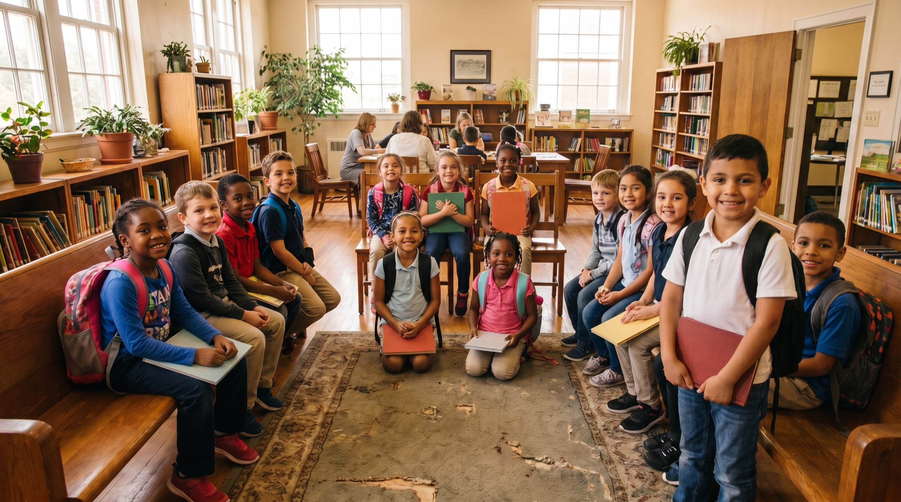

Serving Winchester since 1922
Changing
Winchester,
One Child
at a Time.
A volunteer service club helping children, families, and neighbors across the Shenandoah Valley.
Weekly meetings: Wednesdays at noon at the Winchester Moose Club.
Dedicated to Children & Community Since Day One
Kiwanis is a global organization of volunteers dedicated to improving the world one child and one community at a time. Our Winchester club has embodied this mission since we were chartered in 1922.
We meet every Wednesday at noon at the Winchester Moose Club, and we welcome guests to join us at any service project. Whether you're looking to volunteer, donate, or become a full member — there's a place for you here.
Learn About UsThe Objects of Kiwanis — Est. 1924
To give primacy to the human and spiritual rather than the material values of life
To encourage the daily living of the Golden Rule in all human relationships
To promote the adoption and application of higher social, business, and professional standards
To develop, by precept and example, a more intelligent, aggressive, and serviceable citizenship
To provide, through Kiwanis clubs, a practical means to form enduring friendships, to render altruistic service, and to build better communities
To cooperate in creating and maintaining those sound public attitudes and high ideals of citizenship that make possible high governmental standards
How We Serve Our Community
From holiday bell-ringing to annual pancakes — every program makes a real difference for Winchester children and families.
Salvation Army Bell Ringing
Members brave the cold to volunteer at donation kettles during the holiday season, helping fund vital community programs.
Red Cross Blood Drives
Several times each year, Kiwanis members team up with the American Red Cross to organize blood drives that save lives.
Kids Christmas Party
Children shop for family gifts which members wrap, then enjoy a celebration with lunch, singing, decorations, and joy.
Highway Cleanup
Twice a year, members clean a two-mile stretch of road with proper safety gear, keeping Winchester beautiful.
Pancake Day
Our signature spring fundraiser serves thousands of pancakes at Jim Barnett Park. Proceeds fund grants, scholarships, and kids' programs.
Guest Speakers
Every Wednesday meeting features community leaders, local organizations, and experts sharing what matters most to Winchester.
K Clubs & Youth Programs
We sponsor Key Clubs at 3 high schools and Builder's Clubs at 3 middle schools, empowering the next generation of servant leaders.
Scholarships
Kiwanis awards scholarships to outstanding Key Club members, investing in the future of our most dedicated young volunteers.
Part of a Global Movement
Our Winchester club is one chapter in a worldwide network of volunteers — all united by the same mission: change the world one child and one community at a time.

What is Kiwanis? — Official Video
A Community Club With a Century of Service
Chartered in 1922, the Kiwanis Club of Winchester has a long history of raising and distributing funds for the benefit of our community — with a special emphasis on children.
We meet every Wednesday at noon at the Winchester Moose Club (215 E. Cork St.). Guests are always welcome — come see us in action.
Ready to Change Your Community?
Have you been looking to volunteer for good causes? Do you like helping kids, having fun, and feeling like you made a difference? Join the Kiwanis Club of Winchester today.